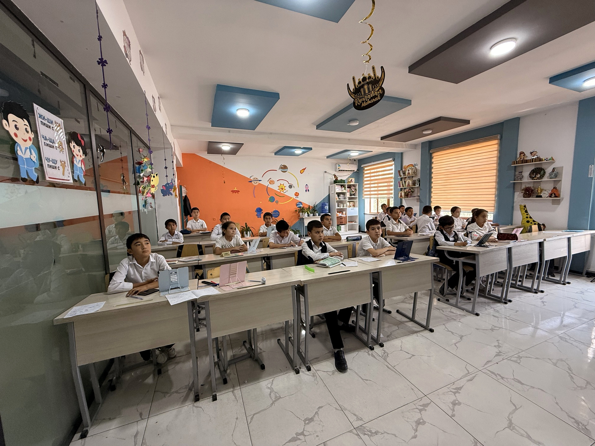

Olimpiada va musobaqa
Furqat tumani fan olimpiadasida 10 nafar o‘quvchimiz g‘olib bo‘ldi
Turon Odob-Ilm xususiy maktabining 10 nafar o‘quvchisi Furqat tumani fan olimpiadasida g‘oliblikni qo‘lga kiritdi.
10.11.2026
Manba ↗